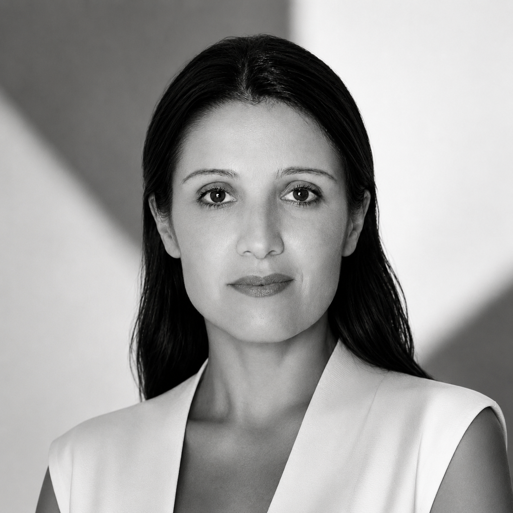
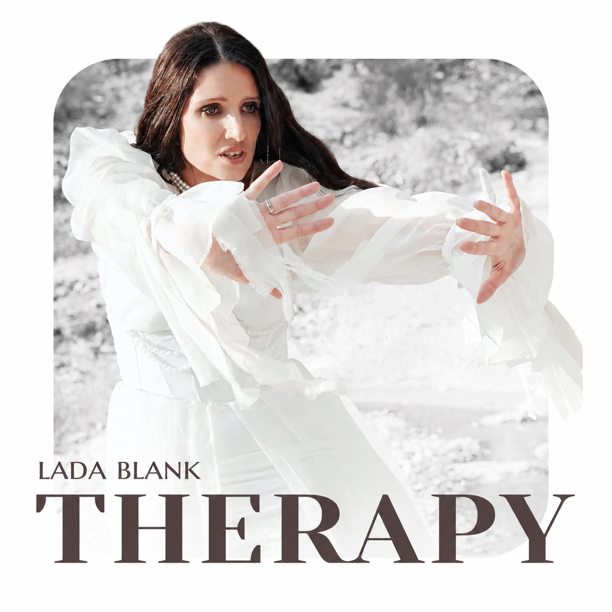

I
Therapy
What remains when the moment has passed.

STATEMENT
Lada Blank creates cinematic musical worlds where each song becomes an emotional space for self-discovery.
Her work explores memory, emotional wounds, identity and the search for inner wholeness — transforming personal stories into a shared human journey.

THE NEW PROJECT
A cinematic journey through the hidden rooms of the human soul.
Every song represents a different emotional space where memories, fears, love, grief and hope coexist.
The album invites listeners to stop running from themselves and discover that healing begins not outside, but within.
FIVE SONGS · FIVE INNER ROOMS
Not a collection of tracks, but one continuous narrative — a movement from searching outside to returning home to oneself.
What remains when the moment has passed.
The silence behind every unanswered question.
The longing to be seen, held and understood.
The place where loss begins to change shape.
The discovery that home has always been within.
VISUAL LANGUAGE
MUSICAL LANGUAGE
“THERAPY is not about suffering.
It is about understanding and awareness.
Not about trauma — but transformation.”
Every song opens another inner room where forgotten memories, fears and hopes still live. The journey through these rooms gradually leads to self-acceptance, inner freedom and wholeness.
ABOUT THE PROJECT
CONTACT / COLLABORATION / PRESS